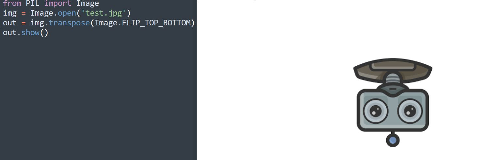

for infile in sys.argv[1:]: f, e = os.path.splitext(infile) outfile = f + ".jpg" if infile != outfile: try: Image.open(infile).save(outfile,'JPG') except IOError: print"cannot convert", infile
out = img.resize((128, 128)) # (w,h) out = img.rotate(45) # 逆时针方向算正
图片翻转
1 2 3 4 5
out = img.transpose(Image.FLIP_LEFT_RIGHT) # 左右翻转 out = img.transpose(Image.FLIP_TOP_BOTTOM) # 上下翻转 out = img.transpose(Image.ROTATE_90) out = img.transpose(Image.ROTATE_180) out = img.transpose(Image.ROTATE_270)

图片模式转换
1 (1-bit pixels, black and white, stored with one pixel per byte)